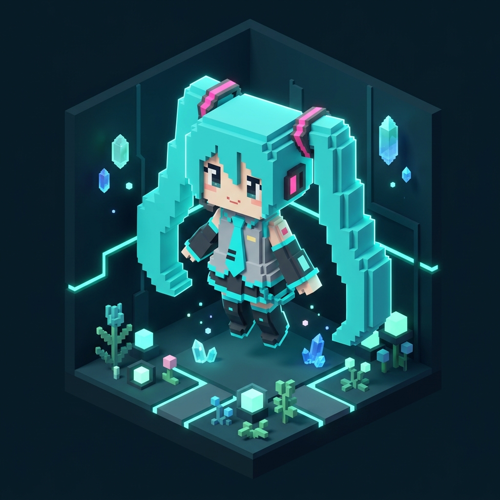

HELLO, I'M
YOUR NAME
Building things, exploring ideas, and turning imagination into something real. Menggabungkan kode berkinerja tinggi dengan antarmuka digital yang memukau.

A SMALL DIGITAL WORLD
Jelajahi pulau digital kecil ini bersama Chibi Miku menggunakan tombol WASD, Tombol Panah, atau klik tanah untuk berjalan. Dekati checkpoint untuk membuka informasi terkait.
ABOUT ME
Profil profesional, fokus keahlian, dan dedikasi dalam membangun produk digital modern.
YOUR NAME
Saya senang mengubah ide dan konsep menjadi produk digital yang intuitif, estetis, dan berkinerja tinggi. Dengan pengalaman lintas platform mulai dari web apps modern hingga eksplorasi interaktif 3D dan Web Audio, setiap detail dirancang dengan cermat dan berorientasi pada kepuasan pengguna.
SKILLS & CAPABILITIES
Penguasaan teknologi modern, arsitektur kode, framework frontend/backend, dan creative tools.
MY PROJECTS
Pilihan proyek unggulan mencakup Web Audio, 3D WebGL, dan aplikasi fullstack responsif.
EXPERIENCE & EDUCATION
Rekam jejak kontribusi profesional dan latar belakang pendidikan formal.
💼 PENGALAMAN KERJA
🎓 PENDIDIKAN
GITHUB HIGHLIGHTS
Repositori publik dan kontribusi open source langsung dari GitHub.
DIVA BEAT ARCADE
Mini-game ritme interaktif berbasis Web Audio API. Tekan tombol [D], [F], [J], [K] atau tap pada layar sesuai beat.
TRANSMIT SIGNAL
Mari berdiskusi seputar peluang proyek, kerja sama, maupun ide teknologi baru.
GET IN TOUCH
Saluran komunikasi terbuka untuk diskusi teknis, rekrutmen, dan kolaborasi kreatif.